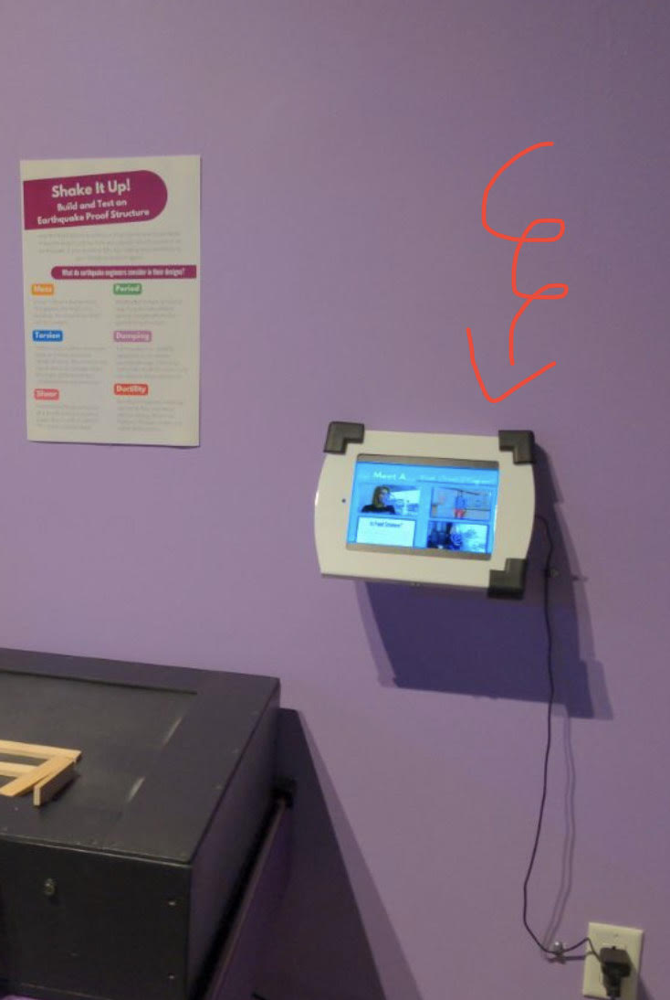

If/then App for the Sci-Tech Discovery Center
- Function: This app was developed to educate children and families visiting the Sci-Tech Discovery Center about the contributions of women in STEM fields like math, physics, life sciences, and health. It serves as an interactive tool to raise awareness and inspire future generations.
- Impact: The app aimed to increase awareness of women’s roles in STEM, helping visitors recognize the importance of diversity and representation in these fields. By engaging users in an educational experience, the app promotes gender diversity and encourages young minds to explore STEM careers.
- Challenges: Developing my first independent app presented several challenges, including a major issue where pressing multiple play buttons or switching pages caused videos to play simultaneously. The lack of experience with XML and managing button states added to the difficulty of implementing a solution.
- Solutions: I tackled these challenges by diving deep into Java and XML documentation, focusing on activity handling within Android Studio. I applied conditional logic to control button-click events, ensuring a smooth user experience by preventing overlapping video playback.
- Takeaways: This project taught me the importance of considering the user’s perspective, especially in an educational setting. Understanding the app's technical aspects is crucial, but aligning development with user expectations is key to creating an engaging and effective tool.